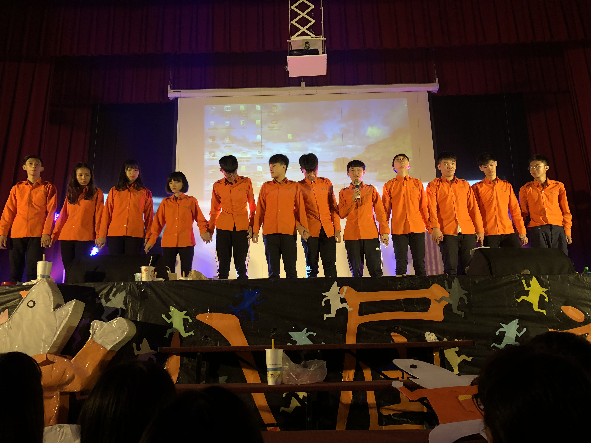
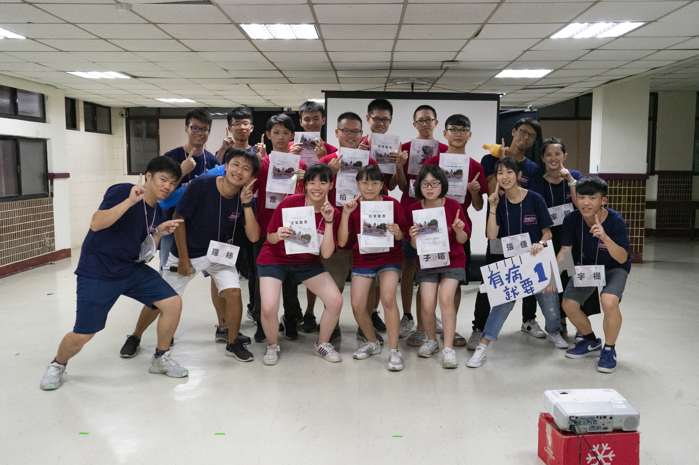
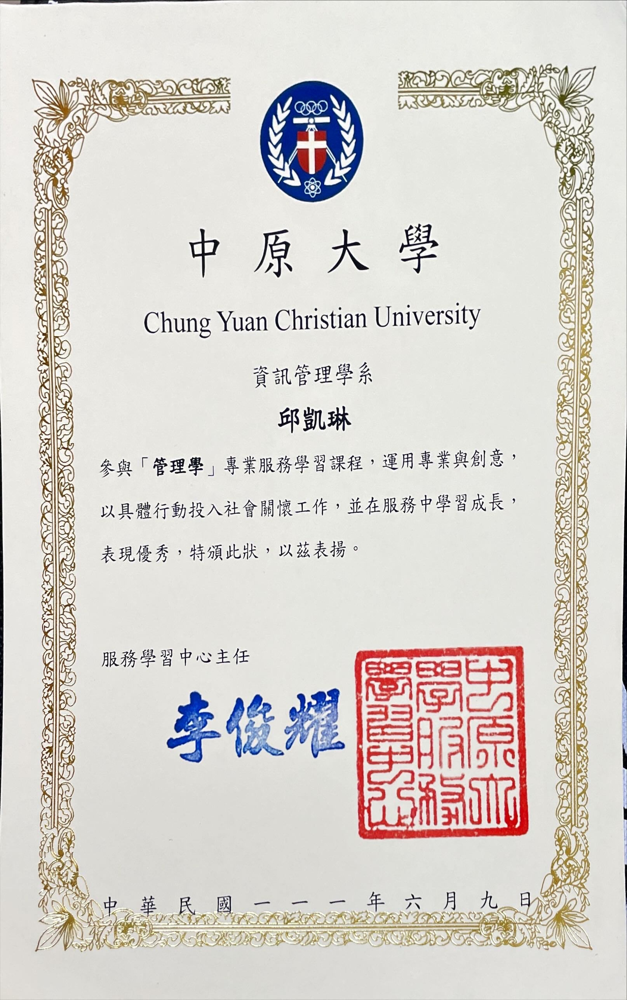

--個人基本資訊--
| 名字： | 邱凱琳 |
| 個性： | 安靜、低調 |
| 缺點： | 拖延 |
| 興趣： | 旅遊 |
| 生日： | 2001/10/13 |
slogan | 命運掌握在自己手裡，命運的好壞由自己去創造。
--個人專業與技能--
| 個人技能 | |
|---|---|
| 籃球 |
學習度：70%
|
| 煮飯 |
學習度：55%
|
| 慢跑 |
學習度：85%
|
| 英文 |
學習度：60%
|
| 程式能力 | |
|---|---|
| Python |
學習度：80%
|
| Java |
學習度：85%
|
| CSS |
學習度：70%
|
| Html |
學習度：75%
|
--個人經歷--

過去活動

高中參加康輔社，圖中為學期成果發表合照，印象準備了好幾個月，包括想劇本、遊戲、聯絡廠商、美宣等等，也與夥伴們吵了幾次架，但這些現在回想起來都是很美好的回憶，意識到時間過得非常快，我們在回憶過去的同時，應該也要想想如何在當下創造出更美好的事物。

高中時期參與國立臺灣師範大學地球科學營隊，是個為期四天三夜的營隊，不僅只有康樂活動，還有相當多的課程，使用了各種地質探勘的器材，也有太空望遠鏡等往天空觀察的，讓我了解到地球科學真的有相當多的未知與奧妙。
由於喜歡攝影，經常前往山區拍照，此圖曾獲台北市觀光局官方帳號分享，拍攝地點為平溪支線的望古車站附近，當天等了好長一段時間才有火車，火車與背景是分開拍的，不僅考驗相機效能，同時也考驗我們使用PS的技術，從當中自己學習了很多。
近期工作經歷
| 亞東醫事檢驗所 | 1年 | 這份工作對我來說意義相當不同，因為當時我是就讀生科系的，而這份工作內容與生科相差不遠，有一種將自己所學用在職場上的好感，包括學校的一些實驗機器，到了工作場所會再看到一遍，所以我這份工作做了比較久，現在的新期望就是找到與資訊相關的打工，可以直接當作實習，相信對未來一定相當有幫助。 |
| 學育補習班 | 3個月 | 這是我第一次在補習班打工，印象相當不好，只做了三個月就離職，我對於打工的想法就是不該占用到太多我自己的私人時間，不過這份工作卻是在下班後還須要花幾個小時準備教材、小考、改作業等，身為一位學生還是應該先將自己的本業顧好，以後應該也不會再嘗試補教業了。 |
| 俊伸股份有限公司 | 2個月 | 高中畢業後的第一份工作，在公司的環境就是所有人年紀都大我非常多，但也因此學習非常快，大家對我都相當的友善，甚至經常送禮給我，讓我當時對於工作這件事覺得沒那麼糟糕了，在此也感謝一路上幫助過我的所有人。 |
近期獎狀

這是我在大二修習本系管理學課程時，因參與服務學習活動，經過班上同學投票後，得到大家的認同，得到此張獎狀，雖然我們做出的服務只是在圖書館整理書架，不過這微小的舉動讓我學習到了非常多，希望之後還有機會再回到圖書館幫忙服務大家。
--聯絡資訊--
手機：0938561056